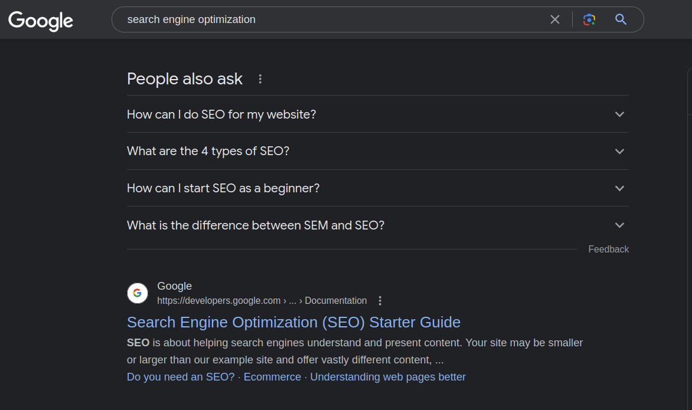

Guide to Sitemap
What is a sitemap ?
A sitemap is a file or page on a website that lists and organizes its content. It serves as a guide for search engines and visitors to navigate through the site. It includes a list of URLs or links to individual pages, along with additional information such as update frequency and importance. Sitemaps help search engines crawl and index websites effectively, improving visibility in search results. They also assist users in finding specific content quickly, especially on large sites. There are XML sitemaps for search engines and HTML sitemaps for visitors. XML sitemaps are submitted to search engines, while HTML sitemaps are linked from the site. In summary, sitemaps optimize website discoverability and usability by providing a structured navigation aid for both search engines and users.
You can find out more in the FAQ section of this page
Snippet of a minimal sitemap
The XML sitemap primarily consists of <loc> tags, each representing a unique URL for a specific webpage. It acts as a navigation guide for search engines, aiding in efficient crawling and indexing of website content. By providing a clear structure of URLs, the XML sitemap enhances search engine visibility and ensures comprehensive coverage of a website's pages.
Copy to Clipboard
Snippet of a detailed sitemap
A more detailed XML sitemap consists of several key components. It includes the URL of each page on the website, along with additional metadata such as the last modification date, change frequency, and priority. These components provide search engines with crucial information for effective crawling, indexing, and understanding the importance of each page within the site's structure.
Copy to Clipboard
Snippet of a detailed sitemap with images or video
An XML sitemap containing <image> tags is a comprehensive representation of a website's image content. In addition to the <loc> tags for page URLs, <image> tags provide essential information like image URLs, titles, captions, and other metadata. This enables search engines to better understand and index the images on a website. Including <image> and <video>tags in an XML sitemap enhances image and video visibility in search results, driving organic traffic and improving overall SEO performance by ensuring effective indexing of image and video content.
Copy to Clipboard
FAQ
What goes into a sitemap ?
A sitemap contains crucial information about the pages or content within a website. It typically includes the following elements:
-
1. URLs: The sitemap lists the URLs or links to individual pages within the website, allowing search engines to crawl and index them.
-
2. Metadata: Additional metadata accompanies each URL, such as the last modification date, priority compared to other pages, and update frequency.
-
3. Hierarchical Structure: Sitemaps often reflect the website's hierarchical structure, organizing pages into categories or directories. This aids search engines in understanding the site's overall architecture.
-
4. Images and Media: If a website includes images or media files, their corresponding URLs can be included in the sitemap. This enables search engines to discover and index multimedia content.
-
5. Alternate Language Versions: In the case of multilingual websites, a sitemap can contain alternate language versions of pages, indicating the availability of different language options for visitors.
-
6. Video or News Content: Specialized sitemap formats may be used for websites with video or news content, providing specific details such as video descriptions, publication dates, duration, or news article metadata.

XML sitemaps follow a specific format defined by search engine guidelines and are primarily intended for search engines. HTML sitemaps, on the other hand, are designed for human visitors and offer a simplified version of the site's navigation structure. By incorporating these elements, a sitemap offers a comprehensive overview of a website's structure, content, and metadata. It assists both search engines and users in navigating and comprehending the organization of the site.
How can i create a sitemap ?
To create a sitemap, follow these steps:
1. Identify your website's pages.
2. Determine the hierarchy of pages.
3. Choose a sitemap format (XML or HTML).
-
4. Use a sitemap generator tool to automatically create the sitemap.
5. Customize the sitemap with optional metadata.
6. Validate the sitemap for errors.
7. Save the sitemap with the appropriate file name.
-
8. Submit the XML sitemap to search engines through webmaster tools. Remember to update the sitemap when making changes to your website.
Check out more: Snippet of a basic sitemap
What is the use of sitemap in SEO ?
Sitemaps play a crucial role in search engine optimization (SEO) by enhancing the discoverability and indexing of a website's content. Here are the key uses of sitemaps in SEO:
-
1. Improved Crawlability: Sitemaps provide a clear and structured map of a website's content, helping search engine bots navigate and crawl the site more effectively. This ensures that all relevant pages are discovered and indexed.
-
2. Indexing of New or Updated Content: When new pages are added or existing pages are updated, submitting an updated sitemap to search engines alerts them to the changes. This prompts quicker indexing of the fresh or modified content, improving its visibility in search results.
-
3. Priority and Frequency Information: Sitemaps can include metadata such as page priorities and update frequencies. This information helps search engines understand which pages are more important or frequently updated, influencing their crawl and indexing decisions.
-
4. Multimedia Content Indexing: If a website contains images, videos, or other media files, including their URLs in the sitemap allows search engines to discover and index them. This enhances visibility in image and video search results.
-
5. URL Canonicalization: Sitemaps can aid in resolving URL canonicalization issues. By providing the preferred version of URLs (e.g., with or without "www"), sitemaps help search engines index the desired version and avoid potential duplicate content problems.
-
6. Enhancing Website Structure: By organizing pages into a hierarchical structure within the sitemap, it becomes easier for search engines to comprehend the website's architecture. This leads to better understanding and indexing of the site's content.
In summary, sitemaps assist in optimizing a website's crawlability, indexing efficiency, and overall SEO performance. They ensure that search engines discover and index relevant pages, improving the website's visibility in search results and enhancing the user's experience.
Does a website have a sitemap ?
Yes, websites can greatly benefit from having a sitemap. Sitemaps improve the discoverability and indexing of a website's content by providing a clear structure and navigation aid for search engines. They ensure that all relevant pages are crawled and indexed efficiently, enhancing the website's visibility in search engine results. Additionally, sitemaps can assist users in finding specific pages or content quickly, especially on larger or complex websites. While having a sitemap is not mandatory, it is highly recommended for optimizing search engine visibility and improving the overall user experience.
Is a sitemap important for SEO ?
Yes, a sitemap is important for SEO. It improves the discoverability and indexing of a website's content by search engines. Sitemaps provide a clear structure of a website, helping search engine crawlers navigate and understand the organization of pages. This ensures that all relevant pages are indexed and increases the likelihood of them appearing in search engine results. Additionally, sitemaps can include metadata like page priorities and update frequencies, which influence crawl and indexing decisions. By submitting an updated sitemap, search engines are promptly informed of new or modified content, improving its visibility in search results. Overall, sitemaps play a crucial role in optimizing a website's visibility, crawlability, and indexing efficiency, making them an important component of SEO strategy.
Where do I find a sitemap ?
To find a website's sitemap, you can check a few different locations. First, look for a link to the sitemap in the website's footer or navigation menu. Some websites explicitly provide a sitemap page for visitors. Alternatively, you can try appending "/sitemap.xml" to the website's URL, as many websites generate an XML sitemap with this naming convention. Additionally, you can use search engine queries like "site:example.com filetype:xml" in Google to search for XML sitemaps associated with the specific website domain.
Where do i put my sitemap ?
Once you have an XML sitemap, you need to place it in a location where search engines can easily find and access it. Here are a few options:
-
1. Website Root: Place the XML sitemap directly in the root directory of your website. This means it should have the same location as your homepage (e.g., www.example.com/sitemap.xml). This is the most common and recommended location.
-
2. Robots.txt: Add a reference to the XML sitemap in the robots.txt file of your website. Include a line like "Sitemap: www.example.com/sitemap.xml" to inform search engines of the sitemap's location.
-
3. Submit to Webmaster Tools: If you have access to webmaster tools provided by search engines (e.g., Google Search Console, Bing Webmaster Tools), use the provided functionality to submit and validate your XML sitemap directly. Remember to update the sitemap location in the robots.txt file if you change its location. Additionally, it's a good practice to inform search engines of any updates to your sitemap by resubmitting it through webmaster tools.
Is a sitemap free ?
Yes, creating and using a sitemap is typically free. You can generate a sitemap for your website using various online tools and plugins without incurring any direct costs. These tools often offer both free and paid versions, but the basic functionality of generating a sitemap is usually available for free. Similarly, submitting your sitemap to search engines, such as Google or Bing, through their webmaster tools is also free. These tools allow website owners to provide search engines with their sitemap for improved crawlability and indexing. While the creation and submission of sitemaps are free, it's important to note that optimizing your website's SEO and implementing best practices may involve additional costs. This could include investing in SEO tools, hiring SEO professionals, or undertaking website improvements based on SEO recommendations. However, the fundamental use of a sitemap to improve search engine visibility and crawlability is typically accessible without any direct financial expenses.
What is the sitemap URL ?
A typical website sitemap URL follows the format "www.example.com/sitemap.xml". The "www.example.com" part represents the domain name of the website, and "/sitemap.xml" specifies the location and file name of the sitemap. However, it's important to note that the actual URL may vary depending on the website's configuration or if a different naming convention or location is used for the sitemap.
Is a Sitemap XML or HTML ?
A sitemap can be either XML or HTML, serving different purposes for search engines and website visitors. XML Sitemap: This format is specifically designed for search engines to understand and crawl a website more effectively. XML sitemaps provide a structured representation of a website's pages and their relationships. They contain a list of URLs along with additional metadata, such as last modification dates and priority levels. XML sitemaps are typically submitted to search engines through webmaster tools or similar interfaces, aiding in indexing and improving search engine visibility. HTML Sitemap: This format is primarily intended for human visitors to navigate a website. HTML sitemaps are often created as web pages containing a hierarchical or categorized list of links to different pages on the site. They offer an overview of the website's structure and provide an alternative navigation option. HTML sitemaps are typically linked from the website's footer or navigation menu, allowing visitors to easily find and access specific pages. Both XML and HTML sitemaps serve important roles. XML sitemaps enhance search engine crawling and indexing, optimizing SEO efforts. HTML sitemaps improve user experience by offering a user-friendly navigation aid, especially on larger or complex websites. While XML sitemaps are primarily for search engines and HTML sitemaps are for human visitors, both formats contribute to the overall accessibility and usability of a website.
How many pages are in sitemap ?
There is no fixed limit on the number of pages that can be included in a sitemap. It can range from a few pages for smaller websites to thousands or even millions of pages for larger, more complex sites. The size of the sitemap depends on the size and structure of the website. However, it is recommended to keep the sitemap size manageable and organized, ensuring that all important and relevant pages are included for effective crawling and indexing by search engines.
Is sitemap still relevant ?
Yes, sitemaps remain relevant and valuable in the context of website optimization. While search engines have become more sophisticated in crawling and indexing websites, sitemaps continue to serve essential purposes. They provide a clear and organized structure of a website's content, aiding search engine bots in discovering and indexing pages more effectively. Sitemaps also assist in optimizing the visibility of new or updated content in search results. Additionally, sitemaps can help identify and resolve crawling issues or errors. Moreover, sitemaps can enhance the user experience by providing a navigation aid and improving the accessibility of a website's content. Overall, sitemaps play a crucial role in SEO, ensuring better crawlability, indexing efficiency, and usability of websites, making them a relevant and beneficial component of website optimization strategies.
Do small websites need a sitemap ?
Yes, even small websites can benefit from having a sitemap. While smaller websites may have fewer pages compared to larger ones, a sitemap still provides advantages in terms of search engine optimization and user experience. Having a sitemap helps search engines discover and index all the relevant pages on your small website, ensuring that your content is included in search engine results and increasing the visibility of your website. It also acts as a navigational aid for visitors, especially if your small website lacks a complex menu or navigation structure. A sitemap helps users quickly find the content they're looking for, enhancing their overall experience. Even with a limited number of pages, organizing your content in a structured manner through a sitemap helps search engines understand the hierarchy and relationships between different pages. This can positively impact your search engine rankings. Moreover, having a sitemap ensures that search engines are promptly aware of any new content or updates you make to your small website. This leads to faster indexing and visibility of your updated content. While the benefits may be more pronounced for larger websites with extensive content, small websites can still benefit from improved indexing, navigation, and organization by implementing a sitemap. It's a valuable tool that aids in optimizing your website's visibility and user experience.
Where can I create a sitemap for free ?
-
1. XML-Sitemaps.com: XML-Sitemaps.com is a popular online tool that offers a free sitemap generator. It allows you to create XML sitemaps for websites with up to 500 pages. The tool crawls your website and generates a comprehensive sitemap that can be downloaded and used to improve search engine indexing.
-
2. Screaming Frog SEO Spider: The Screaming Frog SEO Spider is a powerful desktop tool that has a free version available. It can generate XML sitemaps for small to medium-sized websites with up to 500 URLs. The tool provides detailed insights into your website's structure and helps you identify any crawlability issues.
-
3. Yoast SEO Plugin: If you are using WordPress, the Yoast SEO plugin is an excellent option for sitemap generation. It is a widely used SEO plugin that offers XML sitemap functionality for free. The plugin automatically creates and updates XML sitemaps for your WordPress website, making it easier for search engines to crawl and index your content.
These tools provide convenient and cost-effective solutions for generating sitemaps, helping to improve the visibility and SEO performance of your website.
What is the structure of a sitemap ?
The structure of an XML sitemap follows a specific format defined by search engine guidelines. It typically consists of an XML document with a root <urlset> element. Within the <urlset>, each individual page is represented by a <url> element. Under each <url> element, various sub-elements provide information about the page, such as the <loc> element for the URL, <lastmod> for the last modification date, <changefreq> for the change frequency, and <priority> for the relative priority of the page. This hierarchical structure allows search engines to easily parse and understand the organization of the website's content. Multiple <url> elements can be included within the <urlset>, representing different pages on the site. The XML sitemap follows specific XML syntax rules, including proper opening and closing tags, to ensure compatibility and readability.
What should not be included in a sitemap ?
In an XML sitemap, certain types of content or URLs should typically be excluded. Here are a few examples of what should not be included in an XML sitemap:
-
1. Non-Indexable Pages: Pages that are intentionally set to be non-indexable, such as privacy policy, terms of service, or login pages, should not be included in the XML sitemap. These pages are typically not meant to be indexed by search engines.
-
2. Duplicate Content: If your website has multiple URLs that display the same content, it is recommended to choose a canonical version and include only that URL in the sitemap. This helps avoid indexing duplicate content.
-
3. Outdated or Irrelevant Pages: Pages that are outdated, irrelevant, or have no value to users or search engines should be excluded. This includes old blog posts, expired offers, or irrelevant landing pages.
-
4. Pages Blocked by Robots.txt: If a page is explicitly disallowed from crawling by the robots.txt file, it should not be included in the sitemap. Search engines respect the directives specified in the robots.txt file and won't crawl those pages anyway.
It's important to ensure that the XML sitemap includes only the relevant and indexable pages that are beneficial for search engines and users. By excluding non-relevant or non-indexable content, you can maintain the focus and effectiveness of your sitemap.
Should images be included in sitemap ?
Yes, it is generally recommended to include images in an XML sitemap. Including image URLs in the XML sitemap helps search engines discover and index your website's images. This can enhance visibility in image search results and drive organic traffic to your site. Image-specific information, such as image captions or titles, can also be provided in the XML sitemap to provide further context to search engines. However, it's important to note that images should meet the search engine guidelines and be properly optimized for SEO to maximize their effectiveness in search engine rankings.
How do I create an image sitemap ?
To create an image sitemap, you can include image-specific information within your XML sitemap. For each image, add an <image> tag within the corresponding <url> tag. Include relevant information such as the image URL, image caption, image title, and optional additional details. Ensure that the image URLs are accessible and properly optimized. By including image details in the XML sitemap, you provide search engines with valuable information about your images, aiding in their indexing and visibility in image search results.
Should I exclude images from sitemap?
No, images should not be excluded from an XML sitemap. Including images in the XML sitemap helps search engines discover and index them, improving their visibility in image search results. It provides an opportunity to provide additional information such as image captions and titles. By including images in the XML sitemap, you can enhance the overall SEO performance of your website and drive organic traffic through image searches.
Check out more: Snippet of a detailed sitemap with images or video
Are videos included in XML sitemaps ?
Yes, videos can be included in XML sitemaps. By including video content in an XML sitemap, you provide search engines with valuable information about your videos, such as the video URL, title, description, duration, and other relevant metadata. This helps search engines understand and index your video content more effectively. Additionally, video sitemaps can enhance the visibility of your videos in video search results, potentially driving more organic traffic to your website. Including videos in XML sitemaps is especially beneficial for websites that have a significant amount of video content or rely heavily on video marketing.
Check out more: Snippet of a detailed sitemap with images or video